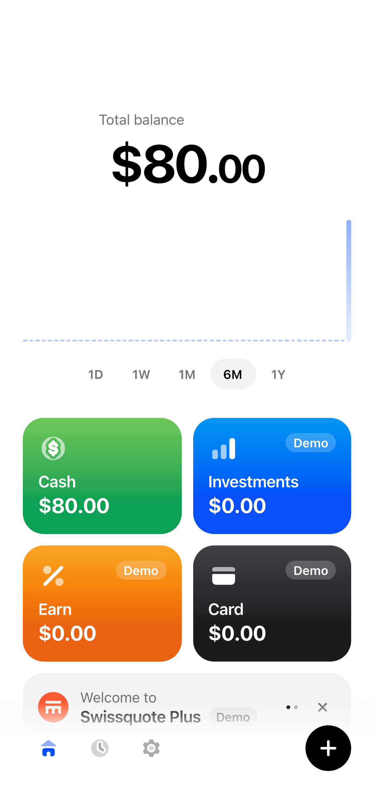
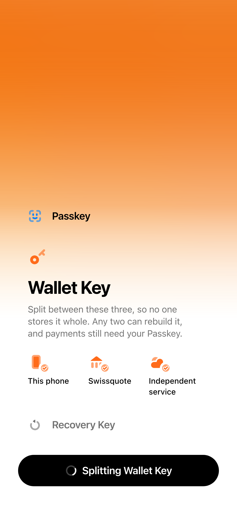
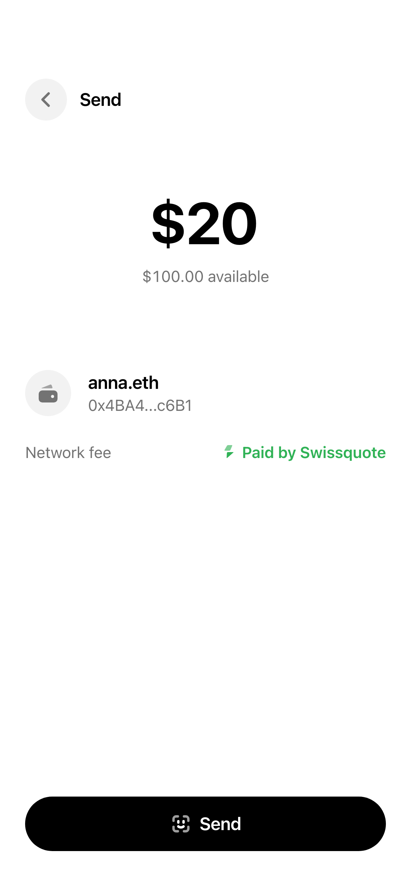
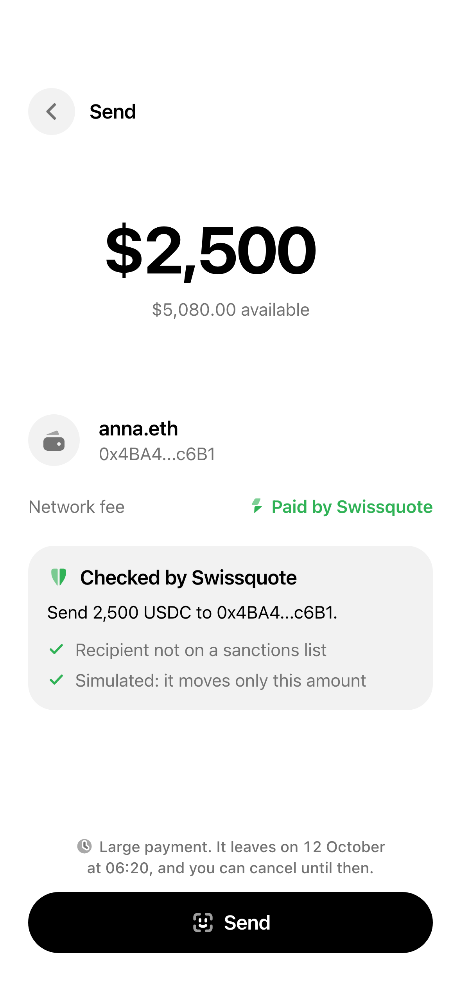
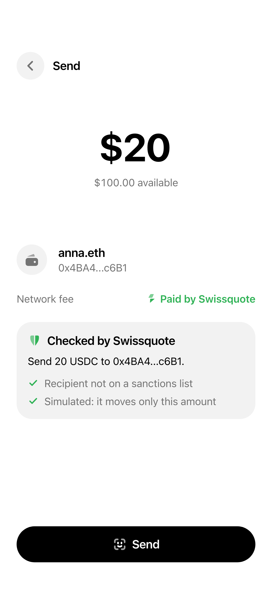
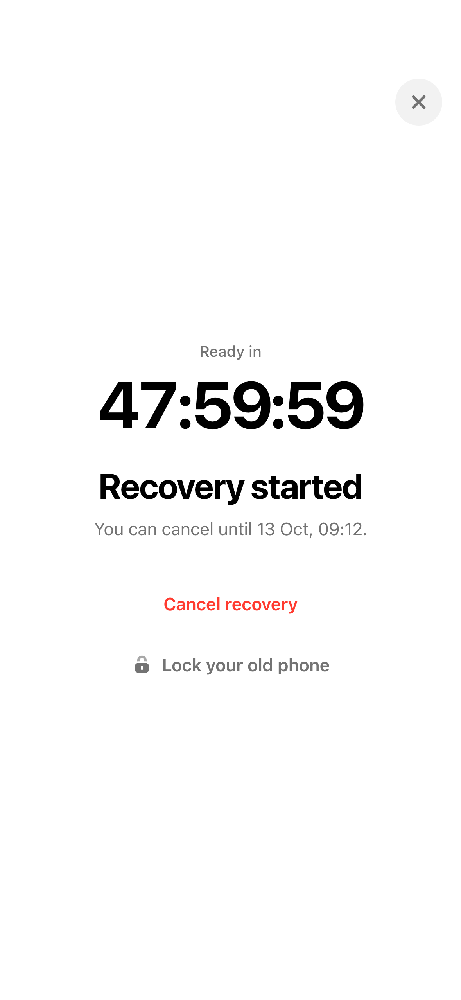

Swissquote Wallet · BSA Hackathon 2026

For twelve words on paper.
Crypto the bank can see, screen and trade.
Lost: funds gone.Photographed: funds stolen.
You hold the keys. Swissquote screens, pays the fee and helps you recover.
Face ID and a Recovery Key. No seed phrase.
Face ID approves. Swissquote screens and pays the fee.
A thief gets a locked phone. Nothing moves.
Recovery Key, ID check (mocked), 48 hours. Same funds.
Any two shares rebuild it on your phone (Shamir secret sharing). The account also demands your passkey.
Inside the signed-in Swissquote app (mocked).

Two signatures on every payment.

Time to cancel if it wasn’t you.
One Face ID. Sent at once.
One Face ID. It leaves 24 hours later.
Refused.

Swissquote checks every payment before it sponsors it, then says what it does in plain words.
Swissquote’s reading, signed and logged“Send 20 USDC to 0x4BA4…c6B1.”
A sanctioned address gets a refusal instead“Swissquote can’t help with payments to or from 0x098b…2f96. It is on a sanctions list.”

Its paymaster covers the network fee of every payment.
Network fee Paid by Swissquote
$0.00Whoever finds it holds a locked phone. Nothing moves.
You, Swissquote and the independent service.

npm run attack tries seven ways in. Each one fails.
Your phone and the independent service get them out. In this build, exit runs from the CLI.
Offline for 30 days.
Run by the independent service. No Swissquote server needed.
Share C is released for it. Without Swissquote, you pay a few cents of ETH.
The phone rebuilds the key from A and C and submits it itself.
Solid parts run for real in the demo. Dashed parts are mocked.
Our reading of Swiss law, for counsel to confirm.
Swissquote can’t move funds, even with the independent service. It can withhold help and cancel a recovery, which we argue is assistance.
At creation the wallet key signs a statement naming the client. Automatic ownership evidence, for FINMA and counsel to accept.
The client signs; the account sends. Swissquote screens, sponsors and submits, but never holds or orders funds. We argue it isn’t the sender.
Today self-custody means leaving. The wallet keeps clients one tap from trading.
Revenue per account a year. CHF 730 M ÷ 1.22 M accounts.
Assets kept. 1,000 clients who would have left × CHF 79k.
Swaps at 1% and Plus pay for free transfers in and gas.
Sources: Swissquote H1 2026 results, pages 1 and 3; crypto pricing, October 2026. Every assumption is in the README.
Claude Code, on Claude Opus and Fable models, wrote the contracts, key split, API, app, tests, docs and this deck.
OpenAI Codex helped revise the early project proposal and check its references.
Thank you. Questions?